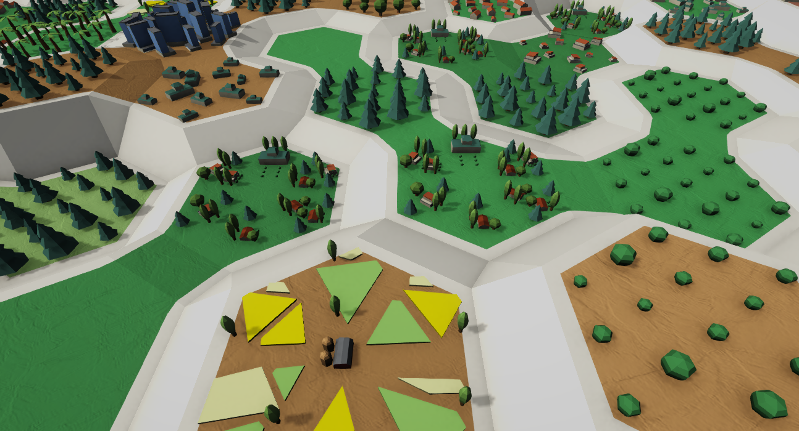

Cell Items: CellItemLayer, CellObjectLayer, and CellEntityLayer

This page explains the “Cell Item” concept in HexTerrains and how it is implemented by:
CellItemLayer(base data model: what item is in a cell + its per-cell transform)CellObjectLayer(visualization via GPU instancing / bulk rendering)CellEntityLayer(visualization & gameplay via ECS entities)
It also covers the key data layers (ItemIndexMap, ItemStateMap, ItemPositionMap, ItemRotationMap, ItemScaleMap, ItemTransformMap), how LOD is selected, and how CacheCellEntityDataSystem prevents ECS structural-change issues during mass terrain destruction.
1. The core idea: “Cell Item”
A Cell Item is “something attached to a terrain cell”.
Every cell can independently store:
- Which item is placed there (
ItemIndexMap) - Which variation/state of that item is active (
ItemStateMap) - How the item is locally transformed within the cell (
ItemPositionMap,ItemRotationMap,ItemScaleMap) - A derived local TRS matrix (
ItemTransformMap) used for fast visualization
Two main implementations then consume this data:
CellObjectLayer: converts Cell Items into render instances (mesh/material batches), rendered withIBulkRenderer.CellEntityLayer: converts Cell Items into ECS entity instances (instantiate/destroy/update).
2. CellItemLayer (base class)
CellItemLayer : HexTerrainLayer, ISerializableTerrainLayer is the shared foundation for “one item per cell”.
2.1 Data layers owned by CellItemLayer
ItemIndexMap (ColorMapCellValueDataLayer_Int)
- Stored value:
intper cell - Meaning: “item type index” (e.g., tree=5, rock=8, none=0 depending on your convention)
- Extra capability: includes a
ColorMap(ColorMapDataLayer) so the item index can be visualized as colors.
How it’s visualized
CellItemLayer.CalculateColorMap()callsItemIndexMap.CalculateColorMap(...).ColorMapCellValueDataLayer_Intcan generate a per-cellColor32map using a palette:AutoColorMapMode.ColorIndexByValue: palette index = cell valueAutoColorMapMode.GradientThroughPalette: normalized value mapped across the palette
This color map is typically fed into a texture used by terrain materials, debug views, minimaps, etc. (the exact consumer is outside CellItemLayer, but the data is produced here).
ItemStateMap (CellValueDataLayer<int>)
- Stored value:
intper cell - Meaning: “state/variation of the item type”
- Example: growth stage, damaged state, season variant, orientation preset index, etc.
How it’s visualized
ItemStateMapis not color-mapped by default.- Instead, it is consumed by derived layers:
CellObjectLayer: selects which visuals to render for this item (state affects the LOD/visuals lookup).CellEntityLayer: selects which prefab to instantiate for this item (state affects prefab selection).
ItemPositionMap (CellValueDataLayer<float3>)
- Stored value: per-cell local translation (relative to the cell)
ItemRotationMap (CellValueDataLayer<quaternion>)
- Stored value: per-cell local rotation
ItemScaleMap (CellValueDataLayer<float3>)
- Stored value: per-cell local scale
ItemTransformMap (CellValueDataLayer<Matrix4x4>)
- Stored value: per-cell local transform matrix (TRS), derived from the maps above
- Purpose: avoid recomputing TRS repeatedly in rendering/entity-placement code
Note:
ItemTransformMapis calculated, and is not serialized byCellItemLayer. Only index/state/pos/rot/scale are serialized.
3. How ItemTransformMap is calculated
3.1 Per-layer transform settings: CellItemTransformSettings
Each layer has ItemTransformSettings (CellItemTransformSettings) which exposes a Transform matrix plus helpers for position/rotation/scale.
This is a layer-wide transform applied to every cell item (in addition to per-cell TRS).
3.2 Calculation job: CalculateCellItemTransformsJob
CellItemLayer.UpdateLocalTransforms(...) schedules CalculateCellItemTransformsJob when any of:
ItemPositionMap.IsDirtyItemRotationMap.IsDirtyItemScaleMap.IsDirty
For each dirty cell (filtered by per-chunk dirty grid), the job computes:
- Per-cell TRS:
TRS(ItemPositionMap[cell], ItemRotationMap[cell], ItemScaleMap[cell])
- Apply layer-wide transform:
ItemTransformMap[cell] = ItemTransformSettings.Transform * TRS(...)
So conceptually:
ItemTransformMap[cell]= LayerTransform × CellLocalTRS
3.3 Why this matters
Derived layers (CellObjectLayer, and typically placement systems for CellEntityLayer) can treat ItemTransformMap[cell] as the item’s local offset inside the cell, already packaged as a matrix, which is ideal for batch operations (jobs + instancing).
4. How ItemTransformMap is used to visualize Cell Items
4.1 The missing piece: the “surface transform”
Cell Items don’t exist in isolation. They are placed “on a surface”.
In this codebase, that “surface” is typically a ChunkMeshLayer which provides per-cell metrics (ChunkMeshLayer.CellMetricsMap), including:
HexCellMetrics.CellTransform_Local(cell center transform relative to the chunk origin)HexCellMetrics.CenterPosition_Global/CellHeight_Units, etc.
4.2 Final transform used for rendering in CellObjectLayer
When building render instances, the job multiplies matrices like this:
cellTransform = cellMetrics.CellTransform_Local * ItemTransformMap[cell]worldTransform = chunkVisibility.Transform * cellTransform * visual.Transform
So the full chain becomes:
- Chunk placement (wrap/offset/visibility positioning)
- × Cell center placement
- × Cell item local TRS (including layer-wide
ItemTransformSettings) - × Per-visual extra transform (mesh pivot correction, sub-part offset, etc.)
5. CellObjectLayer (renders one object per cell via bulk rendering)
CellObjectLayer : CellItemLayer, ISerializableTerrainLayer
5.1 What it adds on top of CellItemLayer
IBulkRenderer BulkRenderer- LOD selection:
NativeList<CellObjectLayerLODSettings> LODSettingsint LODsCount
- Visual definitions:
NativeList<CellObjectVisualItemSettings> AllCellObjectVisualsNativeList<CellObjectLODSettings> AllCellObjectsLODSettings
- Output “render instance buffers”:
List<BulkRenderItemsDataLayer> VisualsByLOD(one buffer per LOD)
5.2 Visual definitions: how objects become renderable instances
CellObjectVisualItemSettings
A single “visual piece” contains:
BulkRenderItemSettings RenderItemSettings(mesh/material/submesh/layer/shadows/property block)Matrix4x4 Transform(extra local transform for this visual)
A single cell object may have multiple visuals, e.g.:
- trunk mesh + leaf mesh
- multiple submeshes/material passes
- decorative attachments
CellObjectLODSettings
For a given (ObjectIndex, State, LOD) combination:
HasVisualsVisualsStartIndexVisualsCount
This points into AllCellObjectVisuals (a flat list holding visuals for all objects/states/LODs).
Indexing formula used at runtime
In the job, LOD settings index is computed as:
cellObjectLODSettingsIndex = objectIndex * StatesCountPerObject * LODsCount + state * LODsCount + lodIndex
This means the config is treated as a flattened 3D table:
- dimension 1: object index
- dimension 2: state
- dimension 3: LOD
5.3 How visuals are calculated (CalculateCellObjectsLOD)
CellObjectLayer.CalculateCellObjectsLOD(...) produces render instances into a BulkRenderItemsDataLayer (a NativeParallelMultiHashMap<BulkRenderItemSettings, BulkRenderItem>).
Key inputs:
- Cell item selection:
ItemIndexMap,ItemStateMap - Placement:
ItemTransformMap - Surface placement:
ChunkMeshLayer.CellMetricsMap - Visibility & chunk transforms:
ChunksGridLayer.ChunkVisibility - Optional overlap surface:
OverlapSurfaceLayerReferenceselects the higher of two surfaces
The core job (CalcCellObjectsLODLayerJob / _OverlapSurface) does:
- Skip cells whose chunk is not visible (
ChunkVisibilityGrid[chunkIndex].IsVisible == false) - Read
ItemIndexMap[cell]andItemStateMap[cell] - Resolve
(objectIndex, state, lodIndex)→CellObjectLODSettings - Resolve
CellObjectLODSettings→ visuals range inAllCellObjectVisuals - Build final transform per visual:
render.Transform = chunkTransform * (cellMetrics.CellTransform_Local * ItemTransformMap[cell]) * visual.Transform
- Add to multi-hashmap bucketed by
visual.RenderItemSettings:RenderEntities.Add(settingsKey, renderItem)
This output is what gets rendered later.
5.4 Rendering (RenderLODs)
CellObjectLayer.RenderLODs(camera, normalizedCameraZoom) selects exactly one LOD to render:
- It iterates
LODSettings[lodIndex]and checks:normalizedCameraZoom >= MinDistance && normalizedCameraZoom <= MaxDistance
Important: LOD distance here is not world-space distance from object/camera. It is a normalized camera zoom value (a “zoom level” abstraction).
This makes LOD switching stable for top-down/strategy cameras where zoom is the primary “detail driver”.
Once the chosen LOD is found, it calls:
Render(camera, BulkRenderer, VisualsByLOD[lodIndex])
which ultimately calls:
BulkRenderer.RenderEntities(renderItemsDataLayer.Data, camera, bounds)
5.5 How bulk rendering works (IBulkRenderer + BulkRendererAsset)
Input format
Rendering input is a NativeParallelMultiHashMap<BulkRenderItemSettings, BulkRenderItem>:
- Key:
BulkRenderItemSettings(mesh/material/submesh/layer/shadows/property block) - Value:
BulkRenderItem(containsTransform)
This structure naturally groups instances by “GPU state”.
BulkRenderItemSettings
Implements IEquatable and IComparable, and includes:
MeshIndex,SubmeshIndex,MaterialIndexShadowMode,ReceiveShadows,Layer,PropertyBlockIndex
Items with the same settings can be rendered in one instanced batch.
BulkRendererAsset (default implementation)
BulkRendererAsset is a ScriptableObject that:
- stores the shared
Meshes,Materials, andMaterialPropertyBlocks - has helpers to “register” renderer assets and obtain indices
Rendering is performed using BulkRendererUtils.Render(...), which chooses:
Graphics.DrawMeshwhen there is exactly 1 instanceGraphics.DrawMeshInstancedorGraphics.RenderMeshInstancedwhen there are many instances
Why batching matters
- Instancing reduces draw calls drastically by drawing N transforms of the same mesh/material in a single call.
- Unity’s instancing APIs typically cap one call to 1023 transforms per batch (hence
_maxTransformsPerPass = 1023).
6. CellEntityLayer (spawns ECS entities per cell item)
CellEntityLayer : CellItemLayer, ISerializableTerrainLayer
6.1 What it adds
CellEntityViewDataLayer CellEntityViews- per cell: which prefab is used, and which instance exists
- plus request buffers for create/remove
NativeList<CellEntityStateConfig> CellEntityConfigs- config table mapping (index/state) → prefab
EntityManager EntityManager- An
EntityCommandBufferfor setting shared components on created instances:CellEntityTerrainReference(shared)HexChunkGridIndex(shared)HexCellIndex(component)
6.2 How it decides what to instantiate/destroy (CalculateEntities)
CalculateEntities(...) schedules CalcCellEntityEntitiesJob which:
For each dirty cell (chunk filtered via dirty grid):
- Reads:
ItemIndexMap[cell](entity index)ItemStateMap[cell](entity state)- current view:
CellEntityViews[cell](current prefab + instance)
- Computes the needed prefab using:
stateConfigIndex = index * StatesCountPerEntityIndex + state
then:
neededPrefab = CellEntityConfigs[stateConfigIndex].Prefab (or Entity.Null if invalid)
- Compares with the currently stored prefab:
- If different:
- enqueue old instance for removal (
RemoveEntityRequests) - enqueue new prefab for creation (
CreateEntityRequests) - if removing without creating replacement, record cell in
ClearedCells
- enqueue old instance for removal (
Result
- After the job,
CellEntityViewscontains:- a stable “current view per cell”
- and two request maps telling the main thread what to instantiate/destroy
6.3 How it instantiates and destroys (UpdateEntities)
UpdateEntities(terrainEntity, layerIndex, ...) runs on the main thread and uses EntityManager.
Creation flow:
- Collect unique prefab keys from
CreateEntityRequests - For each prefab:
EntityManager.Instantiate(prefab, requestsCount, ...)- schedule
SaveCreatedCellEntityEntitiesJobto:- write
CellEntityViews[cell] = { Prefab, Instance } - add instance to
EntityByChunkIndex - enqueue component additions via
EntityCommandBuffer.ParallelWriter:CellEntityTerrainReference { Value = terrainEntity }(shared)HexChunkGridIndex { Value = chunkIndex, TerrainEntity = terrainEntity, LayerIndex = layerIndex }(shared)HexCellIndex { Value = cellIndex }
- write
Cleanup flow:
SaveClearedCellEntityEntitiesJobsets cleared cells toEntity.NullinCellEntityViews.
Removal flow:
- If
RemoveEntityRequestsis not empty, it destroys those instances via:EntityManager.DestroyEntity(entitiesToRemove)
6.4 Playback of the command buffer (PlaybackSetChunkIndexCommandBuffer)
The shared component additions and HexCellIndex additions are delayed through an EntityCommandBuffer to:
- avoid structural changes immediately in the middle of layer processing
- ensure job dependencies are completed first
Call CellEntityLayer.PlaybackSetChunkIndexCommandBuffer() after UpdateEntities(...) work is scheduled/completed as appropriate for your frame pipeline.
6.5 Terrain visibility changes and surface layer changes
What is explicitly implemented in the code shown:
- Systems such as
CalcCellEntityEntitiesSystemandUpdateCellEntitiesSystemskip work whenHexTerrainVisibility.Valueisfalse.
What is enabled by the design (and commonly implemented in companion systems):
- Each created entity receives:
HexCellIndex(cell identity)HexChunkGridIndex(chunk identity + terrain reference + layer index)CellEntityTerrainReference(terrain identity)
This makes it efficient for other systems to:
- update entity transforms when:
- the terrain surface (
ChunkMeshLayer.CellMetricsMap) changes (height/normal/transform) - chunk visibility transforms change (wrapping / connected edges)
- the terrain surface (
- cull/disable entities when chunks become invisible (using chunk index grouping)
CellEntityLayer itself focuses on lifecycle (instantiate/destroy); transform/placement updates are typically handled by separate ECS transform systems using the components above.
7. CacheCellEntityDataSystem (safe cleanup during mass terrain destruction)
7.1 The problem it solves
Destroying many terrain entities in one frame can cause problematic ECS structural-change patterns:
- Terrain entity A is destroyed
- Its
CellEntityLayerGroupcomponent object is removed/destroyed - Cell entities for A must also be destroyed
- Repeating this for many terrains can cause heavy structural churn and ordering hazards
7.2 What the system does
CacheCellEntityDataSystem runs late (PresentationSystemGroup, OrderLast = true) and uses two queries:
- New terrains with entity layers:
- has
CellEntityLayerGroup - excludes
CellEntityDataCache
- has
- Destroyed terrains (layer group gone, but cache still present):
- excludes
CellEntityLayerGroup - has
CellEntityDataCache
- excludes
7.3 Caching (CacheNewCellEntityLayer)
For each new terrain entity:
- reads
CellEntityLayerGroup - extracts and stores references to each layer’s
CellEntityViews(CellEntityViewDataLayer) - writes a cleanup component:
CellEntityDataCache { Layers = List<CellEntityViewDataLayer> }
This cache survives even after the CellEntityLayerGroup component object disappears.
7.4 Disposal after terrain is destroyed (ClearDestroyedCellEntities)
When a terrain entity no longer has CellEntityLayerGroup but still has CellEntityDataCache:
- it iterates cached
CellEntityViewDataLayers - for each view layer:
- iterates all
CellEntityViewitems and destroys non-null instances via anEntityCommandBuffer - disposes the view layer (
layer.Dispose())
- iterates all
- removes the cache component from the terrain entity
Why this helps
- Cell entities are destroyed after the terrain entity is already “logically destroyed” (group removed), reducing the chance of unsafe structural changes occurring while multiple terrain entities are being removed.
8. Practical usage guide
8.1 Choosing a layer type
- Use
CellObjectLayerwhen you want fast visuals (instanced rendering) and don’t need per-item ECS behavior. - Use
CellEntityLayerwhen you want ECS-driven behavior per cell item (AI, interaction, physics, gameplay logic).
8.2 Setting item data
At runtime, modify:
SetCellItemIndex(cellIndex, itemIndex)SetCellItemState(cellIndex, state)- optionally local TRS maps:
SetCellItemLocalPosition(...),SetCellItemLocalRotation(...),SetCellItemLocalScale(...)
Then ensure your update pipeline calls:
UpdateCellItems(...)(or at leastUpdateLocalTransforms(...)) soItemTransformMapstays current.
8.3 Rendering cell objects (typical frame)
- Ensure surface
ChunkMeshLayer.CellMetricsMapandChunksGridLayer.ChunkVisibilityare up to date. - Call
CellObjectLayer.CalculateCellObjects(...)to populateVisualsByLOD[lod]. - Call
CellObjectLayer.Render(camera, normalizedCameraZoom).
8.4 Updating cell entities (typical frame)
- Call
CellEntityLayer.CalculateEntities(...)to compute create/remove requests. - Call
CellEntityLayer.UpdateEntities(terrainEntity, layerIndex, ...)to instantiate/destroy. - Call
CellEntityLayer.PlaybackSetChunkIndexCommandBuffer()to apply component additions.
9. Mental model summary
ItemIndexMap: what (and also provides a color visualization via itsColorMap)ItemStateMap: which variant (affects prefab/visual selection)ItemPositionMap/ItemRotationMap/ItemScaleMap: local per-cell TRS inputsItemTransformMap: derived local TRS matrix =ItemTransformSettings.Transform × TRS(position, rotation, scale)CellObjectLayer: converts cells → render instances (BulkRenderItemSettings+ transform) → instanced renderingCellEntityLayer: converts cells → prefab choice → instantiate/destroy ECS entities, tags them with cell/chunk/terrain identityCacheCellEntityDataSystem: ensures entities can be safely cleaned up even when many terrains are destroyed together